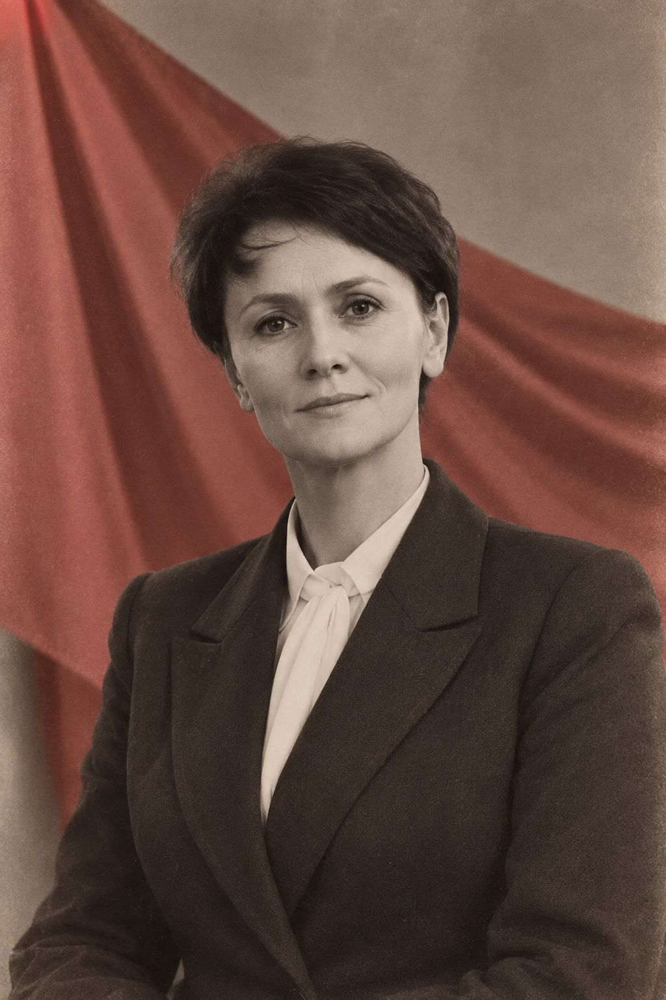
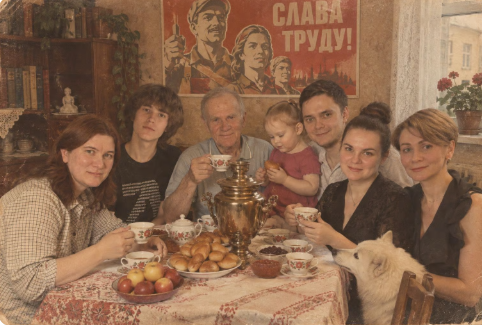

Указ о награждении орденом «Юбилейной зрелости»
Настоящий документ выдан в соответствии с ГОСТом 2026 года «О качестве материнской любви» и Уставом Всемирной Организации Объединённых Матерей (ВООМ).
Учитывая специфику вашей профессиональной деятельности и постоянный контакт с человеческим фактором (включая тех, кто пишет доносы на Солнце и требует компенсацию за моральный ущерб от плохой погоды), настоящим постановляем:
- Ввести в действие режим тотального почитания и безоговорочной любви.
- Обязать всех членов семьи немедленно реагировать на команды «Подать чай» и «Не мешать смотреть сериал» без лишних прений.
- Присвоить звание «Герой Нашего Времени» с вручением соответствующей медали (из шоколада или золота, на ваше усмотрение).
Свидетельство № 2026-Юбилей
Выдано: гражданке Юлии Епрынцевой — пользователю и генеральному распорядителю бумажной персоны «Юлия Епрынцева», чистому кредитору всех причастных юрисдикций.
Настоящее Свидетельство подтверждает, что его обладательница является единственным законным патентообладателем на методы:
- Лечения подорожником и добрым словом (Патент RU 1).
- Управления домашним бюджетом (Патент RU 2).
- Тушения любых конфликтов одним взглядом (Патент RU 3).
- Приготовления борща, который признан стратегическим ресурсом государственного значения.
Хранительницей очага — в части бытовой юрисдикции. Верховным арбитром — в вопросах морального облика семьи. Держателем ключей от холодильника — по факту. Гарантом стабильности — в периоды кризисов, ссор и магнитных бурь. Пользователем 1-й категории — по отношению к чайнику, пылесосу и пульту. Чистым кредитором — по всем долгам, которые ей задолжали окружающие (список прилагается, ведётся с 1980-х).
Уважаемый Товарищ Епрынцева!
Сегодня мы, твои единомышленники, соратники и просто люди, которые хоть раз в жизни сталкивались с абсурдом окружающей действительности, собрались здесь (мысленно, так как все мы находимся на своих рабочих местах), чтобы сказать тебе огромное спасибо.
Мы знаем, как непросто сохранять ясность ума и чувство юмора, когда вокруг тебя бурлит людской океан. Мы, как и ты, ежедневно сражаемся с ветряными мельницами бюрократии, глупости и человеческого равнодушия. И именно ты для нас являешься тем самым маяком стойкости и оптимизма!
От имени всех твоих подруг, коллег, знакомых и даже тех, кто просто однажды зашёл к тебе на огонёк, мы заявляем: Ты — наш лидер! Ты — наш духовный скрепа и моральный компас!
Желаем тебе, чтобы в твоей жизни было как можно меньше «писем в газету» и как можно больше настоящих, тёплых человеческих отношений. Пусть здоровье будет крепким, как советский сейф, а счастье — бесконечным, как очередь за дефицитом в 80-х (но только чтобы она шла быстро и с хорошим настроением)!
Слава Юбиляру! Слава Товарищу Епрынцевой! Ура! Ура! Ура!


Вопрос дня
«Что вы думаете о гражданке Епрынцевой и её вкладе в мировую стабильность?»
Опрос проводился среди домочадцев, родственников, котов и домового. Погрешность — в пределах разумного. Явка — 146%.